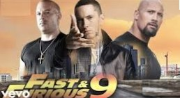
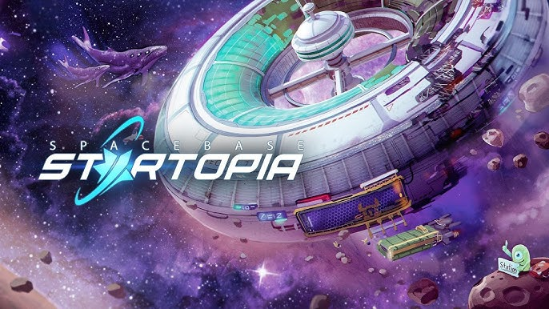
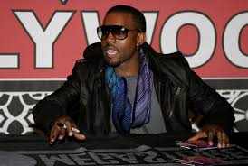

El mundo del hip hop quedó en shock cuando Eminem publicó en sus redes sociales un video hablando en español fluido, anunciando el lanzamiento de su primer álbum completamente en este idioma. Titulado "Rapido y Furioso", el proyecto incluirá temas que combinan rap, reguetón y cumbia. En una entrevista con un medio latino, Eminem declaró: "Siempre he sentido un gran respeto por la comunidad latina y quería hacer algo especial para ellos. Aprendí español viendo telenovelas y practicando con J Balvin." El primer sencillo, "Soy Slim Shady", presenta a Daddy Yankee y Bad Bunny, y promete ser el próximo éxito del verano. Además, rumores apuntan a que Maluma y Karol G también aparecerán en el álbum. La comunidad latina ya ha comenzado a especular si Eminem ofrecerá conciertos en países de habla hispana, con México y España como destinos probables.

Jay-Z sigue demostrando que su visión empresarial no tiene límites. Según reportes de fuentes cercanas a Roc Nation, el rapero adquirió un terreno en Marte a través de SpaceX, con planes de construir la primera discoteca en el espacio exterior, llamada "Roc-A-Park". El proyecto incluirá instalaciones de lujo, como un bar con vistas panorámicas al planeta rojo y una pista de baile con gravedad reducida para que los asistentes puedan "flotar al ritmo del beat". Se dice que los hologramas de leyendas como Tupac y Notorious B.I.G. actuarán cada fin de semana, mientras que Elon Musk será el encargado del sistema de sonido intergaláctico. La inauguración está programada para 2030 y las entradas, disponibles exclusivamente como NFTs, ya están siendo subastadas por millones de dólares. Jay-Z afirmó en un comunicado: "Si la Tierra es demasiado pequeña para mi visión, entonces el universo es mi nuevo escenario."

Kanye West vuelve a ser tendencia, esta vez con el lanzamiento de "YeezyTalk", una red social diseñada exclusivamente para artistas de hip hop, productores y creativos. Kanye aseguró que la plataforma es un lugar para que las mentes más brillantes del rap compartan ideas sin miedo a las críticas negativas. Entre las características de YeezyTalk destacan las "batallas de freestyle virtual", en las que los usuarios pueden enfrentarse con avatares personalizados y beats generados por inteligencia artificial. Además, hay un sistema de recompensas que otorga puntos Yeezy por publicar contenido original, los cuales se pueden canjear por productos exclusivos de Yeezy y entradas VIP a conciertos. En una reciente transmisión en vivo, Kanye declaró: "Las redes sociales tradicionales son tóxicas para los verdaderos genios. Aquí estamos creando una plataforma donde el hip hop puede evolucionar sin límites." Drake, Kendrick Lamar y Travis Scott ya tienen perfiles verificados, mientras que rumores indican que Nas podría ser el director creativo de la red social.
